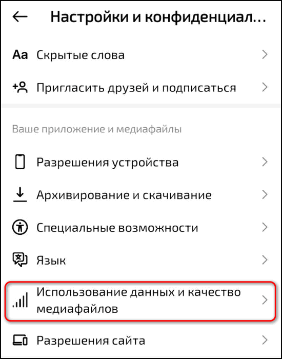
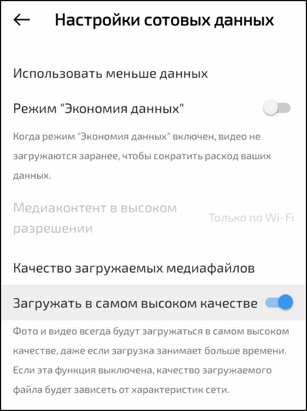
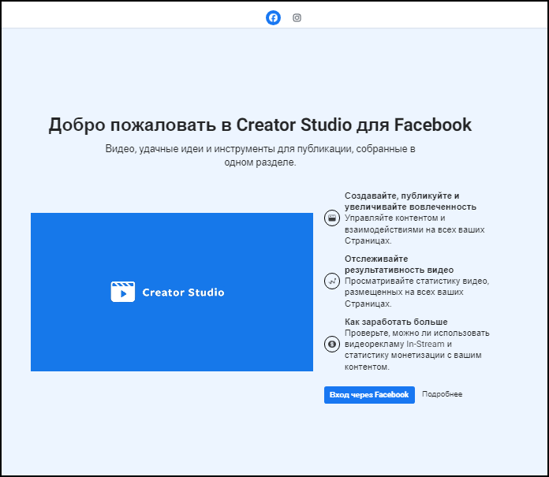
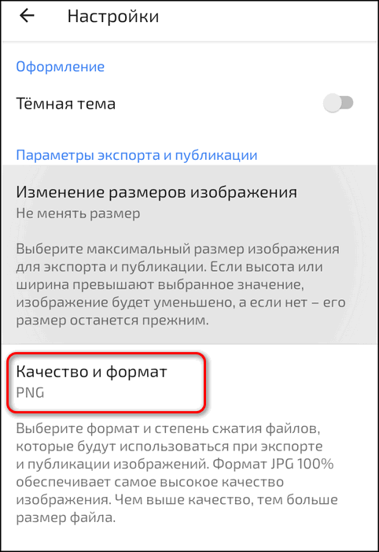
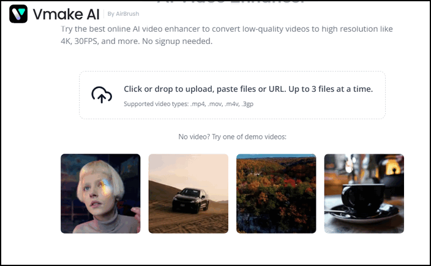
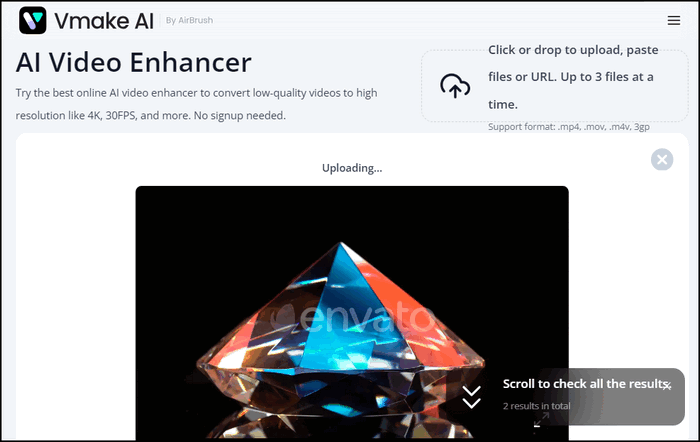
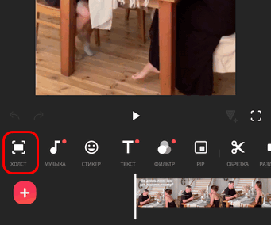

Как улучшить качество фото и видео в Инстаграме при публикации

После размещения контента, пользователь может задаться вопросом: как улучшить качество видео в Инстаграм*. Социальная сеть ужимает размер файла, размещаемого в Ленте, и соответственно делает клип хуже по отображению цвета.
Как Инстаграм* ухудшает качество
Социальная сеть сжимает файлы, чтобы сделать их передачу быстрее. Даже в настройках приложения пользователь найдет пункт: «Максимальное качество», которая при переключении поможет в улучшении. Но файлы будет грузиться дольше обычного, поэтому модераторы рекомендуют пользоваться такой опцией при стабильном подключении к Интернету и скоростном. Также, у Инстаграма* есть особенность в размещении материалов с разных устройств. Владельцы Android чаще сталкиваются с ухудшением качества и это проблема в кодировке картинки. Поэтому для них рекомендовано создавать изображения и видео не через камеру Instagram*, а с помощью встроенного приложения. То же касается добавления фильтров, редактирования Reels. Чтобы сохранить качество, пользователям рекомендуют придерживаться требований к изображениям:
- разрешение 1080 на 1080 все еще актуально и минимально ухудшает качество фото;
- вес файла до 30 мб;
- формат: JPEG или PNG.
При добавлении PNG снижается риск того, что качество будет хуже. Но переводят в другой формат либо через компьютерные программы и сервисы, либо с помощью мобильных приложений.
Настройки приложения без сжатия
Улучшить качество фото в Инстаграм* помогут базовые настройки, в самом приложении. Изначально в социальной сети выставлена загрузка на скорость, а не сохранение оттенков, резкости и теней. Если от вас кто то из бывших скрыл Истории, или полностью закрыл аккаунт, то есть вариант следить за ним и просматривать фото и видео этого человека. Чтобы загружать фото и видео в исходном качестве:
- Открыть Инстаграм* - Настройки и конфиденциальность.

- Использование данных и качество медиафайлов – Загружать в высоком качестве.

Также стоит отключить режим «Экономии данных», который влияет на качество просматриваемых материалов.
Сохранение качества зависит от типа сети. Чтобы ускорить загрузку стоит одновременно включить Wi-Fi и мобильные данные. При стабильном и скоростном подключении медиаконтент будет загружаться быстрее.
Экономия мобильных данных: что за функция
Экономия мобильных данных – это опция, которая необходима при нестабильном подключении к сети или небольшом объеме мегабайт мобильного интернета.
Чтобы выложить видео в хорошем качестве, желательно отключить эту функцию. Тогда автор сможет посмотреть контент после размещения в исходном формате, без сжатия.
В остальном, функция поможет, если плохое или нестабильное соединение с интернетом. Контент других пользователей будет показан в низком качестве, а при переходе к видео появится предупреждение: «Открыть файл». То есть, контент не загружается автоматически.
Улучшить качество фото в Инстаграм*
Один из способов, как загружать контент в Инстаграм* без потери качества – воспользоваться Creator Studio. Это продукт Facebook* для авторов контента, направленный на планирование, загрузку публикаций и профессиональную работу с социальной сетью. Чтобы воспользоваться Creator Studio, нужно связать страницу из Инстаграма* с Фейсбуком*, подключить статус «бизнес» или «автор» и начать работу с сервисом.

Для тех, кому не хочется делать аккаунт общедоступным или начинать работу с Креативным центром, есть другие способы по улучшению:
- мобильные приложения и сервисы для ПК по улучшению качества и редактированию снимков;
- модификации для Инстаграма*. Например, Instander, где есть дополнительные настройки по управлению социальной сетью;
- предварительное сохранение контента в мессенджере и перенос в Инстаграм*.
Нестандартный способ, как улучшить качество для размещения в Инстаграм*: отправить снимок в «Избранное» в Телеграм и оттуда снова сохранить пост, и опубликовать в социальной сети. Эксперты отмечают, что таким способом фотография меняет кодировку на WEB, что облегчает её загрузку в Инстаграм*. Другой вариант – мобильные приложения. К примеру, Snapseed, где можно указать формат файла. Чтобы улучшить качество фотографии для Инстаграма*:
- Скачать из Play Market или AppStore приложение Snapseed.
- Выбрать снимок из Галереи для редактирования.

- В меню добавления эффектов нажать сверху три точки.
- Выбрать: «Настройки» - Формат файла.
- Указать: «PNG» - подтвердить выбор.
Теперь снимок будет сохранен в выбранном формате и автор сможет залить его без потери качества. На Андроиде и Айфоне, чтобы загружать видео в хорошем качестве, можно воспользоваться приложением InShot. В настройках экспорта клипа появятся пункты: «Частота кадров» и «Качество», и последний пункт выбрать в «Максимальном». Эта функция улучшает даже клипы с плохой передачей цвета и теней.
Онлайн-сервисы
С помощью сервиса Vmake AI можно улучшить три клипа бесплатно. Нужно загрузить видео, продолжительностью не более 30 секунд и подождать, пока они будут обработаны. Как это сделать:
- Зайти в сервис – нажать по кнопке: «Upload».

- Загрузить файл и подождать окончания обработки.

- После этого скачать на компьютер или смартфон.
Сервис улучшает цветопередачу, повышает резкость и четкость изображения. В его функции также входит: удаление вотемарок, изменить фон и работа с картинками. Но количество редактирований (и максимальная продолжительность клипа) ограничено.
Моды для приложения
Выкладывать фото в Инстаграме* без потери качества проще с Айфона. Социальная сеть минимально урезает снимки с iOS, чего нельзя сказать об Андроиде. Но такая проблема режима с помощью модификаций для приложения.
Мод – тоже программный продукт, который может быть установлен либо дополнительно, либо вместо оригинального приложения. Зачастую, именно второй вариант актуален для установки дополнительного ПО.
ТОП-4 модов для Инстаграма*:
- GB Insta. Направлен на загрузку фото и видео в хорошем качестве;
- Instander. Видоизмененное приложение, где есть дополнительные функции для управления прямыми эфирами, рекламой, загрузкой снимков и клипов в Ленту и Истории;
- OGInsta+. Позволяет скачивать фото и видео со страниц других пользователей;
- InstaUltra MOD. Отсутствует на русском языке, но открывает дополнительные функции: копирование биографии, расширение аватарок, загрузка в высоком качестве, скачивание чужого контента.
Instander наиболее популярен: постоянная поддержка и регулярные обновления, как только появилась новая версия официального приложения. Чтобы его установить, нужно удалить текущий Инстаграм* и скачать APK-файлом мод. Есть два варианта, как загрузить фото и видео в хорошем качестве через Instander:
- воспользоваться стандартными настройками мода, не заходя в раздел для разработчиков;
- через экспериментальные параметры.
Через стандартные:
- Удалить официальное приложение Instagram* со смартфона.
- Установить модификацию Instander последней версии.
- Зайти и авторизоваться – перейти в раздел: «Настройки».
- Параметры Instander – Загружать фото и видео в максимальном качестве.
После подтверждения контент станет добавлять в Ленту в повышенном качестве. То же касается и Историй, где при загрузке видео и фото максимально сжимается изображение.
Оптимизация видео в Инстаграм*
Чтобы загружать клипы с минимальной потерей качества, пользователю стоит уменьшать их размер и разрешение самостоятельно, через дополнительные приложения. Например, в InShot можно обрезать клип под квадрат, чтобы загрузить в Ленту. Или же, выбрать вертикальный формат для добавления в Reels. Как изменить размер и формат:
- Зайти в InShot – Новый проект.
- Загрузить свой клип – выбрать среди инструментов: «Холст».
- Указать квадратный размер – перейти к экспорту.

- Выбрать FPS 60 кадров в секунду – формат MOV.
- Сохранить клип на смартфон.
Выбирать максимальный размер не имеет смысла: социальная сеть ужмет запись таким образом, чтобы сделать её простой для загрузки. Поэтому при выборе размера файла можно указывать средний: чтобы видео быстро загрузилось и не потеряло качество.
Почему на iPhone и Android разное качество
Повысить качество на Андроиде можно разными способами, а вот владельцам iPhone это необязательно. Одно из объяснений, почему так происходит – параметры сжатия под разные модели устройств. Так в iPhone стандартное качество на всех смартфонах и линейка моделей менее расширенная, чем у устройств на базе Android. Относительно телефонов под управлением Андроид – проблема в количестве моделей и разнообразии. Поэтому Инстаграм* применяет усредненные параметры компрессии. То есть, от распространенности модели зависит качество фото и видео, которое будет добавлено в Ленту или Истории. Если вы начинающий блогер, то можете аккуратно воспользоваться накруткой подписчиков, лайков и просмотров. Но очень важный момент - накрутка должна начинаться на малых объемах и проверенных сервисах и очень аккуратно наращивать их.